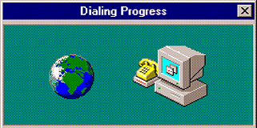

Hi, I'm SAM
I'm a 20 year-old Digital Arts & Culture major with two minors, JAMS & Design, at UW-Milwaukee. I dabble in a lot of mixed media work, digitally and physically.
This website is a project for my Web Design (ART 324) course, and my first time using in this type of media or any web based design.
When this project was prompted I was in a bit of a loss. I didn't have a lot of "re-design" work that I wouldn't consider a portfolio, so I decided to go a more research route.
I've had a morbid interest in predator catcher content creators and media, so my immediate idea was to do a brief website into online child extortion and the resources that are available.

Child sexual abuse is more accessible today because of the internet. CWLA. https://www.cwla.org/child-sexual-abuse-is-more-accessible-today-because-of-the-internet/
Centers for Disease Control and Prevention. (n.d.). About child sexual abuse. Centers for Disease Control and Prevention. https://www.cdc.gov/child-abuse-neglect/about/about-child-sexual-abuse.html
Davis, P. (2025, April 9). Spike in online crimes against children a "wake-up call." National Center for Missing & Exploited Children. https://www.missingkids.org/blog/2025/spike-in-online-crimes-against-children-a-wake-up-call
FBI. (2024, January 16). Sextortion: A growing threat targeting minors. FBI. https://www.fbi.gov/contact-us/field-offices/miami/news/sextortion-a-growing-threat-targeting-minors
National Statistics on Child Abuse. National Children's Alliance. (2026, March 31). https://www.nationalchildrensalliance.org/media-room/national-statistics-on-child-abuse/
Online enticement pre-travel. (n.d.). https://www.missingkids.org/content/dam/missingkids/pdfs/ncmec-analysis/Online%20Enticement%20Pre-Travel.pdf
Over 300 million children a year are victims of technology-facilitated sexual exploitation and abuse. Childlight. (n.d.). https://www.childlight.org/newsroom/over-300-million-children-a-year-are-victims-of-online-sexual-exploitation-and-abuse
Vaughan, E. H. (n.d.). NCMEC releases New Sextortion Data: Over 100 reports received daily in 2025. National Center for Missing & Exploited Children. https://www.missingkids.org/blog/2026/ncmec-releases-new-sextortion-data-2025